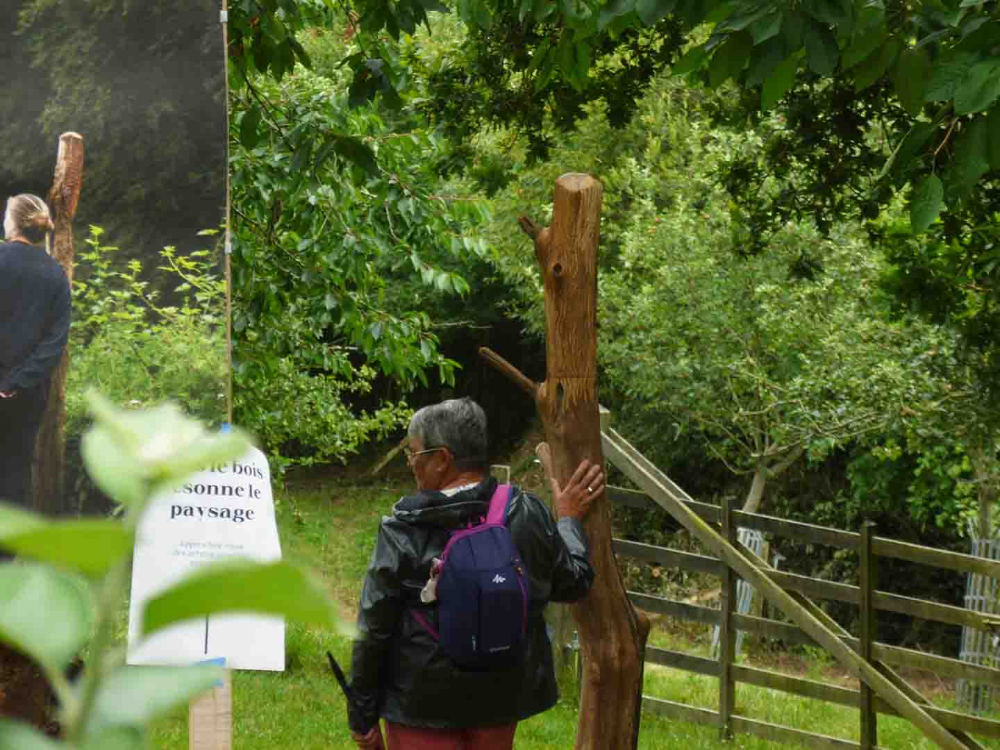
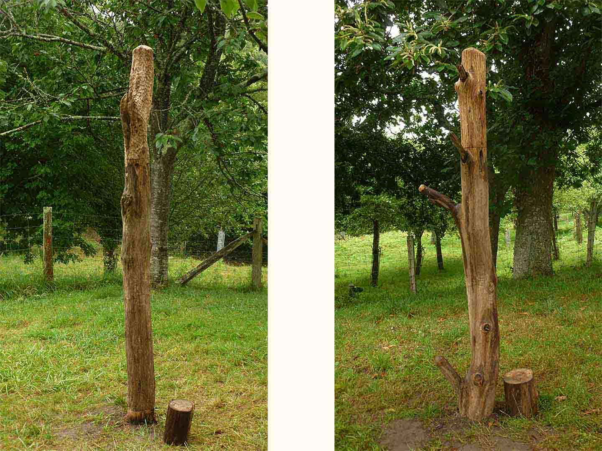
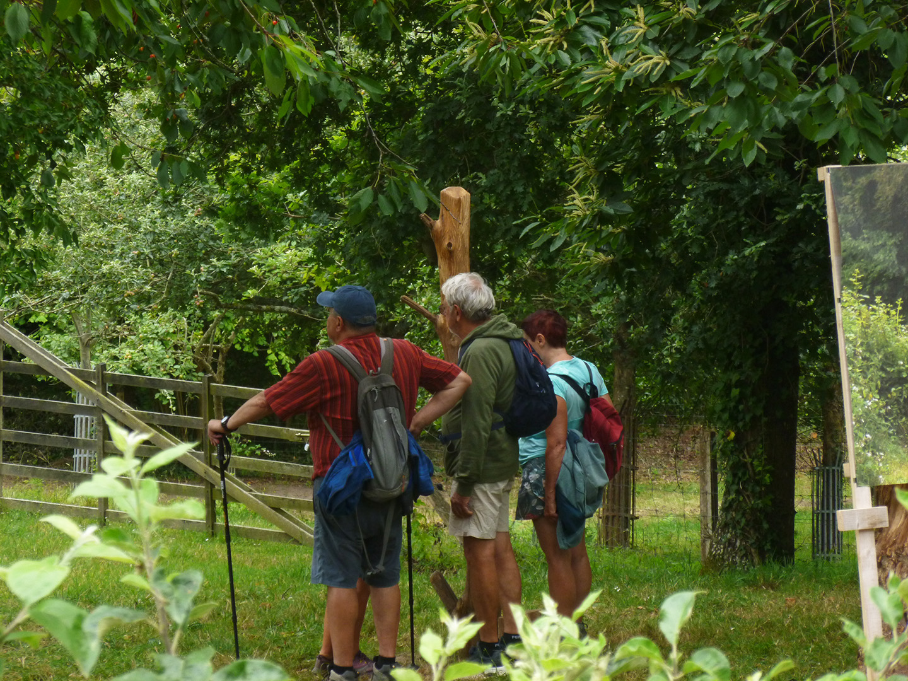
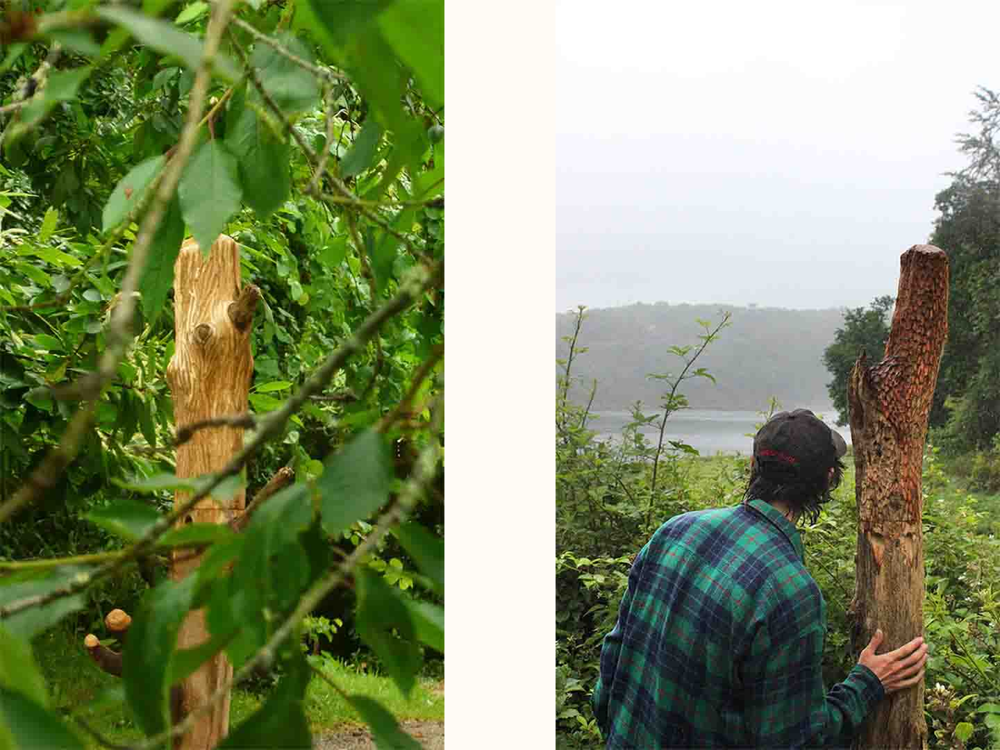
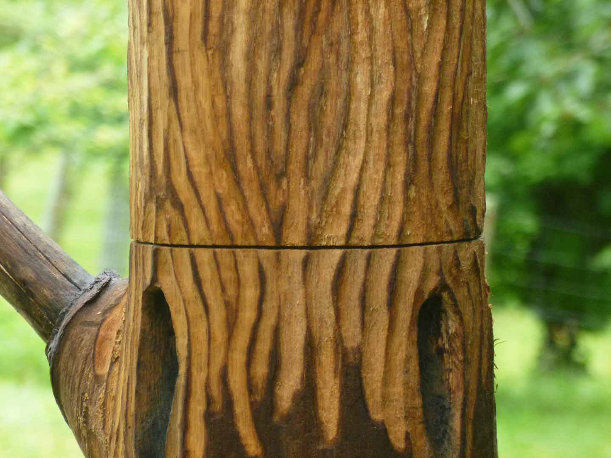

Dans le bois résonne le paysage
2024-2025
Programme Design des Territoires
Antenne Design des Mondes Littoraux
Avec la participation :
Christiane Pit
Nathaël Ayrault
↜ Photo de couverture par Nathaël Ayrault
En échangeant avec les personnes qui entretiennent quotidiennement des sites naturels ouverts au public nous nous sommes aperçus que leurs paroles se concentraient sur les forces peu visibles (animales, végétales, géologiques) qui façonnent les paysages de ces lieux.
Notre projet souhaite ainsi partager ces clés de compréhension des paysages aux visiteurs. Au domaine départemental de la Roche Jagu nous avons enregistré les paroles de jardiniers le temps d’une balade le long du Trieux, dans des espaces moins jardinés du parc. Ils y évoquent des éléments parfois négligés, mais essentiels pour la vie du lieu : ronces, vase, bois mort.


Placés en retrait des points de vue habituels, ils invitent à porter attention à ce qui est souvent ignoré.
Approchez l’oreille des branches, appuyer sur leur bouton et faites résonner le paysage !



Site conçu par Amaury Hardré, 2024


à propos